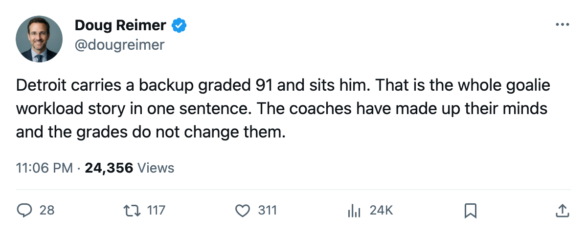
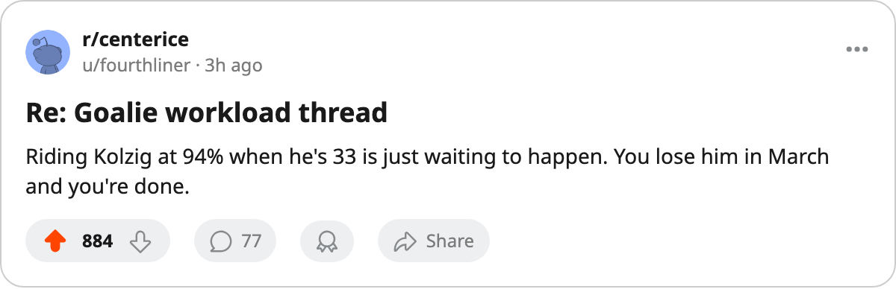

DET
DET TOR
TOR FLA
FLA CBJ
CBJ94% to 43%: The League Rides 20 Men and Splits 4 Nets
Olaf Kolzig has played 61 of 65. Detroit carries a backup graded 91 and still sits him.
 Doug ReimerAnalytics editor, ex-video coach · The Slot Report
Doug ReimerAnalytics editor, ex-video coach · The Slot Report
 Olaf Kolzig92 has played 61 of
Olaf Kolzig92 has played 61 of  Washington Capitals's 65 games. At 94%, he carries the heaviest starter's workload in the league. The next five men on that list share 86% or better. Twenty clubs out of thirty hand one goaltender at least 80% of the starts. The answer to whether that is sustainable depends on who is standing behind him.
Washington Capitals's 65 games. At 94%, he carries the heaviest starter's workload in the league. The next five men on that list share 86% or better. Twenty clubs out of thirty hand one goaltender at least 80% of the starts. The answer to whether that is sustainable depends on who is standing behind him.
Method: rank every club by the primary goaltender's share of games played, then compare that share to the backup's Book grade and the team's point total.
The workload table


 Atlanta Thrashers
Atlanta Thrashers

 Mighty Ducks of Anaheim
Mighty Ducks of Anaheim

 Calgary Flames
Calgary Flames

 Edmonton Oilers
Edmonton Oilers

 San Jose Sharks
San Jose Sharks

 Minnesota Wild
Minnesota Wild

 Buffalo Sabres
Buffalo Sabres

 Colorado Avalanche
Colorado Avalanche

 Ottawa Senators
Ottawa Senators

 Philadelphia Flyers
Philadelphia Flyers


 Tampa Bay Lightning
Tampa Bay Lightning

 Carolina Hurricanes
Carolina Hurricanes

 Chicago Blackhawks
Chicago Blackhawks

 New Jersey Devils
New Jersey Devils
 Dallas Stars
Dallas Stars

 Los Angeles Kings
Los Angeles Kings
 St. Louis Blues
St. Louis Blues

 Montreal Canadiens
Montreal Canadiens

 Nashville Predators
Nashville Predators
 New York Rangers
New York Rangers

 Vancouver Canucks
Vancouver Canucks
 Boston Bruins
Boston Bruins

 Pittsburgh Penguins
Pittsburgh Penguins
 New York Islanders
New York Islanders


The grade gap does not predict workload
Detroit carries Curtis Joseph, graded 91 in the Book, one point below Dominik Hasek at 92. The two closest grades in the league between a primary and backup goaltender sit in Detroit's crease. Hasek has played 90% of the games.
Compare that to Toronto, where Roberto Luongo at 93 sits above Ed Belfour at 92, a gap of 1, and the workload splits 66/38.
Sean Burke at  Phoenix Coyotes carries 84% with Boucher at 83 behind him. A 5-point gap, a 68-point workload difference from Toronto's arrangement.
Phoenix Coyotes carries 84% with Boucher at 83 behind him. A 5-point gap, a 68-point workload difference from Toronto's arrangement.
The grade gap between starter and backup does not track workload across the league. Coach habits do.
The overworked men and their injury designations
Among the goalies above 84% workload, the injury ledger shows the following designations this season:
| Goalie | Club | Share | Spells on IR | Days Lost | GP Played |
|---|---|---|---|---|---|
| Olaf Kolzig | WSH | 94% | 4 | (within WSH's 244 total) | 61 |
| Roman Turek | CGY | 86% | 4 | (within CGY's 123 total) | 55 |
| Manny Fernandez | MIN | 85% | 5 | (within MIN's 114 total) | 53 |
| Jeff Hackett | PHI | 84% | 5 | (within PHI's 179 total) | 52 |
| Sean Burke | PHX | 84% | 6 | (within PHX's 206 total) | 52 |
| Patrick Lalime | OTT | 84% | 3 | (within OTT's 118 total) | 54 |
| Nikolai Khabibulin | TB | 84% | 4 | (within TB's 552 total) | 53 |
Fernandez and Hackett each carry 5 designated spells, Burke 6. These are not long absences; the repeat-case record shows most of these spells running 1 to 3 days. But the pattern is that the league designates these men unavailable, then the lineup card puts them back in net within a day or two. Burke went on the list on 2005-02-28, the same day he came off. The same pattern held for Roberto Luongo, whose 6 designated spells produced 42 starts in 64 games.
The Bureau's Development Index has 5 goaltenders on its risers list: Josh Harding at +5, Pascal Leclaire at +4, Jason Bacashihua85 at +4, Ryan Miller at +4, and Ari Ahonen at +4. The form term has five young goalies rising above their base. Four of them have played fewer than 14 games this season. The Index is tracking ability the lineup card has not yet found a use for.
What the committees prove
The 3 clubs under 70% split their nets: Toronto at 66%, Columbus at 61%, Florida at 43%. Their point totals are 102, 62, and 60. The split does not produce winning. The best team in hockey splits its net because it has two goaltenders graded 93 and 92; the worst splits produce the same middling results as the workhorses.
Twenty coaches have decided one man is their guy and will ride him until the ledger designates otherwise. Ten could not decide and split. The Book grades tell you which backups could carry the load; the lineup cards ignore them.

